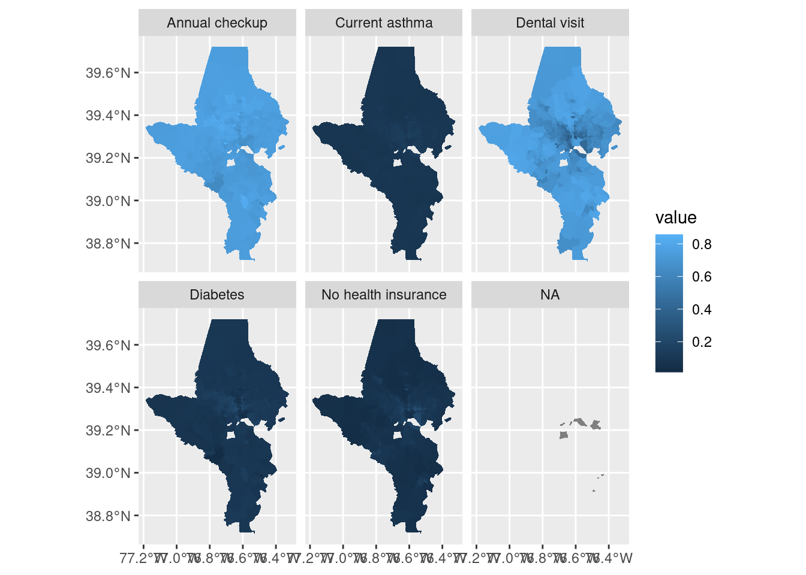
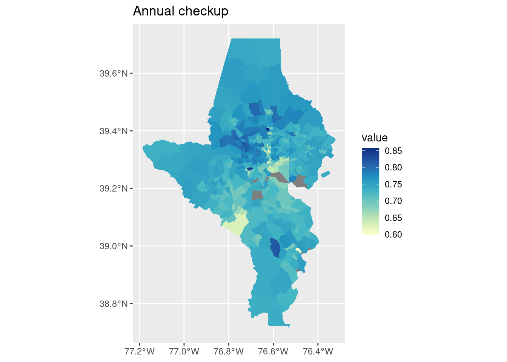
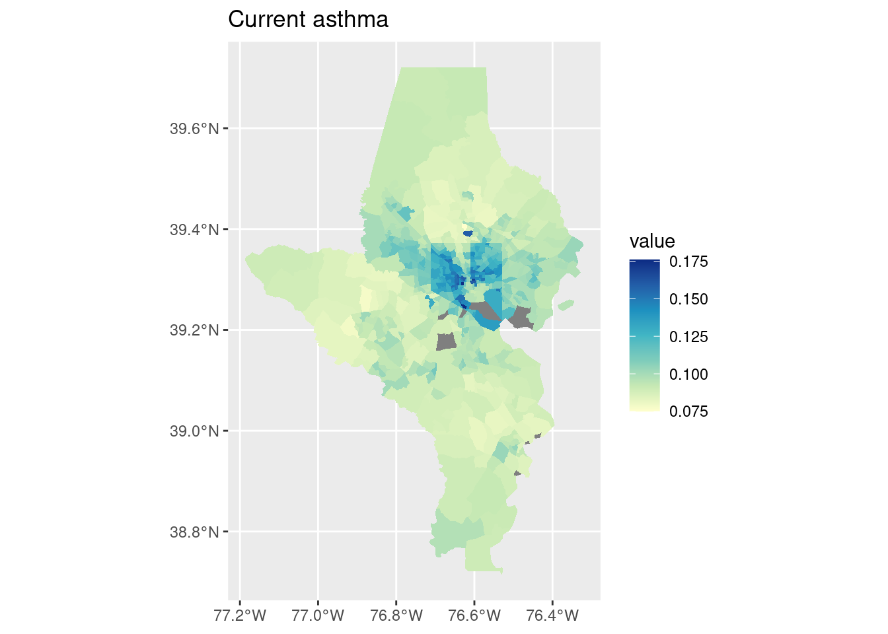
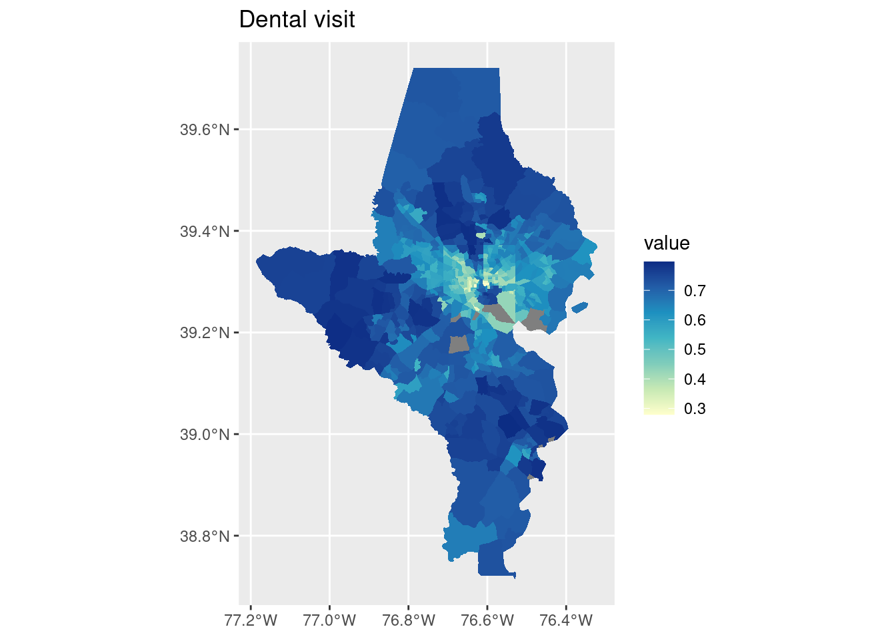
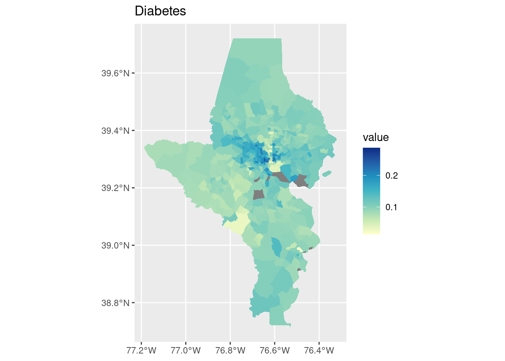
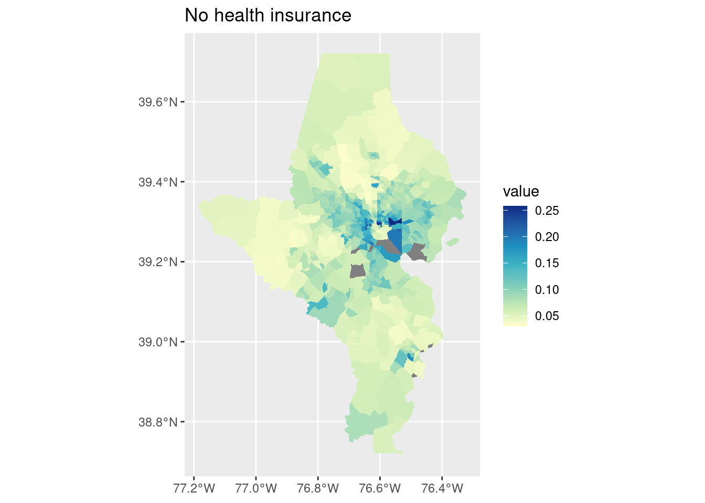

Remember that when you’re working with data you could put on a map, you want to double check whether you should put it on a map. One of the best ways you can do this is just by doing your regular EDA first—understand your distributions, correlations, outliers, disparities, etc before you think about it spatially. Then start to investigate whether there are spatial patterns. Both spatial and non-spatial visualizations will have their strengths and weaknesses, so you’ll want to pair them such that they complement each other. Here are some examples with the CDC health data. I’ll start looking at preventive care measures (checkup, health insurance, dental visit) and basic health outcomes (asthma, diabetes) for Baltimore and surrounding counties.
library(dplyr)library(justviz)library(ggplot2)library(sf)county_fips <- tidycensus::fips_codes |>filter(state_code =="24") |>select(state_code, county_code, county)# CDC data still uses 2010 tracts, so I'll download that shapefile# keep county FIPS codes to join with names in order to filtertracts10 <- tigris::tracts(state ="24", cb =TRUE, year =2010, progress_bar =FALSE) |>select(tract = GEO_ID, state_code = STATE, county_code = COUNTY) |>left_join(county_fips, by =c("state_code", "county_code")) |>filter(county %in%c("Baltimore city", "Baltimore County", "Howard County", "Anne Arundel County")) |># drop "1400000US" from FIPS codes, only keep digits til end of stringmutate(tract = stringr::str_extract(tract, "\\d+$"))tracts10 |>st_drop_geometry() |>count(county)
county
n
Anne Arundel County
105
Baltimore County
214
Baltimore city
200
Howard County
55
Keeping in mind that Balt city & county each have about twice as many tracts as Anne Arundel, 4 times as many as Howard, so they’ll likely dominate distributions that aren’t split out by county.
head(cdc)
level
year
location
indicator
value
pop
us
2021
US
Health insurance
10.8
331893745
us
2021
US
Cancer (except skin)
7.0
331893745
us
2021
US
Mental health
14.7
331893745
us
2021
US
Diabetes
11.3
331893745
us
2020
US
Dental visit
64.8
331893745
us
2021
US
Current asthma
9.7
331893745
# remind myself what indicators are hereunique(cdc$indicator)
# remind myself what geographic levels are herelevels(cdc$level)
[1] "us" "state" "county" "tract"
# filter for indicators I want, and if it's a tract, only the ones in this region# cdc data says "Baltimore City", FIPS table says "Baltimore city"# cdc also doesn't say "County", just e.g. "St. Mary's"# want to also have county names for tracts--use a left join to not drop other levels# county portion of FIPS code is digits 3 to 5# relabel "health insurance" to "no health insurance" since that's what it actually iscdc_subset <- cdc |>mutate(county_code =ifelse(level =="tract",substr(location, start =3, stop =5),NA_character_)) |>left_join(county_fips, by ="county_code") |>select(-county_code, -state_code) |>mutate(location = stringr::str_replace(location, pattern ="City", replacement ="city")) |># for counties, if string doesn't end with "city", replace the ending boundary with " County"mutate(location =ifelse(level =="county", stringr::str_replace(location, "(?<!city)\\b$", " County"), location)) |>filter(indicator %in%c("Health insurance", "Diabetes", "Dental visit", "Current asthma", "Annual checkup")) |># use | to make an OR statementfilter((level %in%c("us", "state")) | (level =="county"& location %in% tracts10$county) | (level =="tract"& location %in% tracts10$tract)) |>mutate(value = value /100) |>mutate(indicator =ifelse(indicator =="Health insurance", "No health insurance", indicator))cdc_subset |>distinct(level, location) |>count(level)
level
n
us
1
state
1
county
4
tract
568
Counting the distinct number of locations per level helped me figure out the string replacements I needed to make above—originally I had 1 county and no tracts, and knew that was wrong.
Annual checkup is about as close to normally distributed as you’ll see with public health data. Dental visit has a long lower tail—many tracts have a majority getting a dental visit but some have rates much lower. Diabetes has most values clustered around ~10% but then a heavy upper tail. Similar for lacking health insurance and asthma.
Bar chart is good for looking at absolute values but in this case not as good as a dot plot for seeing the differences between values. Looking at averages across large areas (state & counties) some of these have very similar values, esp annual checkup and asthma. That points to the disparities at smaller geographies being really important—that amount of variation seen in the histograms is washed out at the county level. Maps might be able to help shine a light on that, especially if the high or low values are clustered in certain areas.
On each of these Baltimore city has enormous variations—this makes sense since we have huge disparities within the city. (For the cities I study in Connecticut, this would more often be a city/suburb pattern; Connecticut’s major cities don’t have the sorts of affluent neighborhoods in them that Baltimore has, those neighborhoods are in affluent suburbs instead.)
Some basic stats testing of each indicator by county:
# split into a list of data frames to keep indicators separatecdc_split <- cdc_subset |>filter(level =="tract") |>split(~indicator)str(cdc_split, max.level =1)
One-way ANOVA test of equal means across counties, weighted by tract population. Post-hoc testing with Tukey’s HSD to see which counties have significantly higher or lower mean values. Feel free to ignore if you haven’t gotten this far in stats.
# shorten names, increase margin sizepar(mar =c(5, 10, 4, 2) +0.1)cdc_split |> purrr::map(mutate, county = stringr::str_remove(county, " County")) |> purrr::map(function(df) {# use aov for one-way ANOVAaov(value ~ county, data = df, weights = pop)}) |> purrr::map(TukeyHSD) |> purrr::map(plot, las =1, cex =0.4)
cdc_split |> purrr::map(function(df) { car::leveneTest(value ~ county, data = df, weights = pop) })
$`Annual checkup`
Levene's Test for Homogeneity of Variance (center = median: pop)
Df F value Pr(>F)
group 3 28.076 < 2.2e-16 ***
564
---
Signif. codes: 0 '***' 0.001 '**' 0.01 '*' 0.05 '.' 0.1 ' ' 1
$`Current asthma`
Levene's Test for Homogeneity of Variance (center = median: pop)
Df F value Pr(>F)
group 3 54.708 < 2.2e-16 ***
564
---
Signif. codes: 0 '***' 0.001 '**' 0.01 '*' 0.05 '.' 0.1 ' ' 1
$`Dental visit`
Levene's Test for Homogeneity of Variance (center = median: pop)
Df F value Pr(>F)
group 3 38.712 < 2.2e-16 ***
564
---
Signif. codes: 0 '***' 0.001 '**' 0.01 '*' 0.05 '.' 0.1 ' ' 1
$Diabetes
Levene's Test for Homogeneity of Variance (center = median: pop)
Df F value Pr(>F)
group 3 86.57 < 2.2e-16 ***
564
---
Signif. codes: 0 '***' 0.001 '**' 0.01 '*' 0.05 '.' 0.1 ' ' 1
$`No health insurance`
Levene's Test for Homogeneity of Variance (center = median: pop)
Df F value Pr(>F)
group 3 32.651 < 2.2e-16 ***
564
---
Signif. codes: 0 '***' 0.001 '**' 0.01 '*' 0.05 '.' 0.1 ' ' 1
Every indicator has unequal variance across counties. Again points to important neighborhood-level disparities in at least some of the cities / counties.
Spatial stuff
tracts10 |>left_join(cdc_subset, by =c("tract"="location", "county")) |> rmapshaper::ms_simplify(keep =0.8) |>ggplot() +geom_sf(aes(fill = value), color ="white", linewidth =0) +facet_wrap(vars(indicator))

Two things that don’t work well here: there are a few tracts without data so they end up in an NA facet. For EDA that’s not a big deal, but for a final project I’d want to handle it. Also, the scale doesn’t work because ranges are very different across indicators. Switch to using split data instead so each panel can get its own color scale:
cdc_split |> purrr::imap(function(df, indicator) { tracts10 |>left_join(df, by =c("tract"="location", "county")) |>ggplot() +geom_sf(aes(fill = value), color ="white", linewidth =0) +scale_fill_distiller(palette ="YlGnBu", direction =1) +labs(title = indicator) })
$`Annual checkup`

$`Current asthma`

$`Dental visit`

$Diabetes

$`No health insurance`

That also handled the missing values!
For a final project I might want to do a couple of these maps alongside a bar chart or dot plot at the state & county level.
I also might want to try overlaying some of our locations such as brownfields (those could exacerbate asthma) and highways (those definitely exacerbate asthma).
There are similar statistical tests you might do for spatial data, such as Moran’s test of spatial autocorrelation (clustering of high/low values).